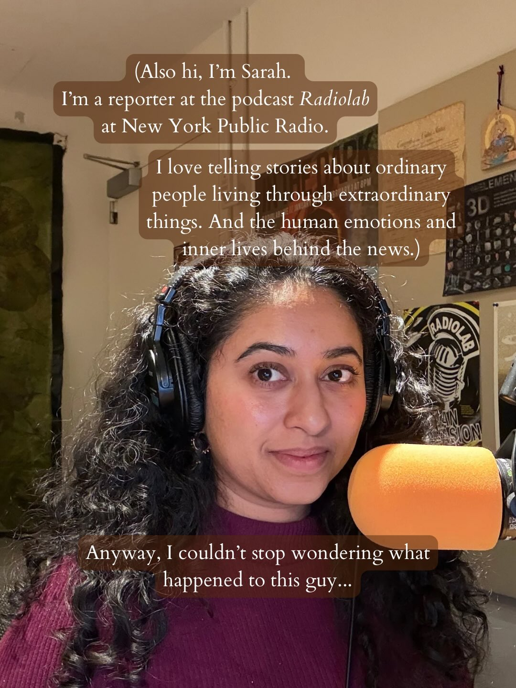
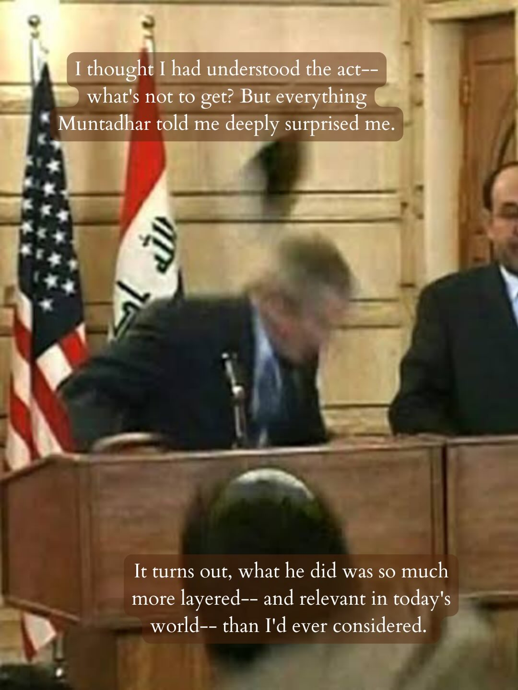
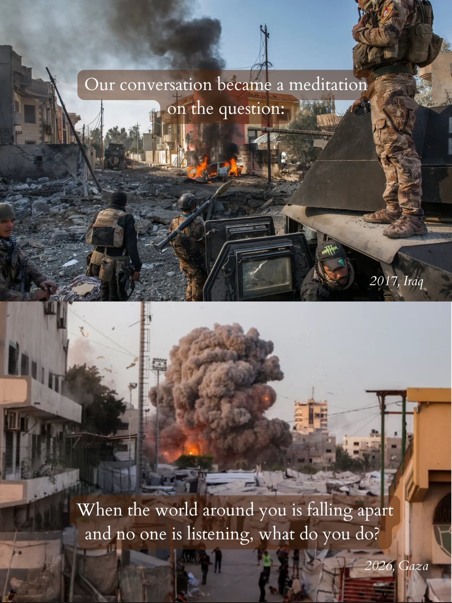
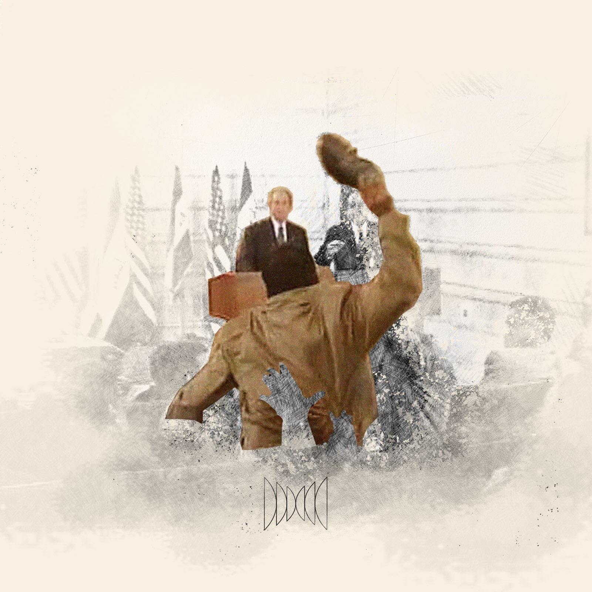

Instagram Post

Huge ups to everyone at @radiolab, @mariamdwedar...
carousel (7 slides) (enriched by ClaudeClaw)
Summary
Two years ago, as I read the news about horrible things h... | (Also hi, I'm Sarah | So I tracked him down | I thought I had understood the act-- what's not to get? B... | Our conversation became a meditation on the question: 201... | The episode is out TODAY on the Radiolab feed and whereve... | < Give it a listen and let me know what you think
Caption
Huge ups to everyone at @radiolab, @mariamdwedar and @maisalbayaa who were instrumental to making this episode 👞
#podcast #iraqwar #shoethrower #bush #politics
1
Two years ago, as I read the news about horrible things happening in the world, a burning question popped into my head: Whatever became of the man who threw his shoes at George W. Bush?
A still from a video shows a man in a suit ducking behind a wooden podium with an American flag and an Iraqi flag in the background, as a shoe flies through the air.
2
(Also hi, I'm Sarah. I'm a reporter at the podcast Radiolab at New York Public Radio. I love telling stories about ordinary people living through extraordinary things. And the human emotions and inner lives behind the news.) Anyway, I couldn't stop wondering what happened to this guy...
A woman with curly dark hair wears headphones and speaks into an orange microphone, looking to her right, with text overlays describing her profession and interests, and a cluttered room with posters in the background.
3
So I tracked him down. His name is Muntadhar Al-Zaidi. And what I thought would be one interview turned into 3. Almost 8 hours' worth of conversation.
A multi-panel image displays three individuals, two women and one man, appearing to be engaged in a remote interview or podcast, with text overlays describing the process.
4
I thought I had understood the act-- what's not to get? But everything Muntadhar told me deeply surprised me. It turns out, what he did was so much more layered-- and relevant in today's world-- than I'd ever considered.
A man in a suit ducks behind a wooden podium while another man in a suit is visible to the right, with the American and Iraqi flags in the background.
5
Our conversation became a meditation on the question: 2017, Iraq When the world around you is falling apart and no one is listening, what do you do? 2026, Gaza
The image is split into two scenes of conflict: the top shows soldiers in a war-torn street with burning debris and damaged buildings, while the bottom depicts a large explosion with a mushroom cloud of smoke in an urban area.
6
The episode is out TODAY on the Radiolab feed and wherever you listen to podcasts. I spent months working on it and it's close to my heart.
A person with dark curly hair is shown from the chest up, looking at the camera, with a microphone in the foreground and an indoor background.
7
< Give it a listen and let me know what you think. (Links to listen in bio.) The Shoe Thrower Radiolab Yesterday • 1h 17m When no one seems
All slides


